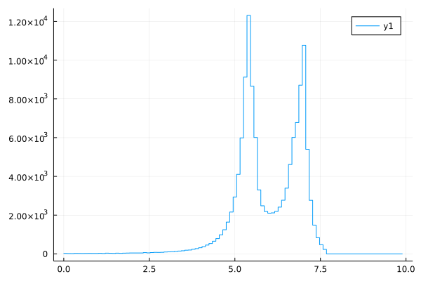

Examples
Tracing geodesic paths
using Gradus
using Plots
m = JohannsenPsaltisMetric(M=1.0, a=0.6, ϵ3=2.0)
# observer position
u = @SVector [0.0, 1000.0, π/2, 0.0]
# set up impact parameter space
α = collect(range(-10.0, 10.0, 20))
β = [0.0 for _ in α]
# build initial velocity and position vectors
vs = map_impact_parameters(m, u, α, β)
us = [u for _ in vs]
sols = tracegeodesics(
m, us, vs, (0.0, 2000.0);
abstol = 1e-12, reltol = 1e-12
)
plot_paths(sols, legend = false, n_points = 2048)
plot_horizon!(m, lw = 2.0, color = :black)
Alternatively, plotting the 3D paths from e.g. a lamp-post coronal model:
m = KerrMetric(a = 0.0)
model = LampPostModel()
sols = tracegeodesics(
m,
model,
2000.0,
n_samples = 64
)
plot_paths_3d(sols, legend=false, extent = 10, t_span = 100.0)
plot_horizon_3d!(m)
Shadow
using Gradus
using Plots
m = KerrMetric(1.0, 0.998)
u = SVector(0.0, 1000.0, π / 2, 0.0)
α, β, img = rendergeodesics(
m,
u,
# max integration time
2000.0,
image_width = 1000,
image_height = 1000,
fov = 70.0,
verbose = true,
ensemble = Gradus.EnsembleEndpointThreads(),
)
p = heatmap(
α,
β,
img,
color = :grayC,
xlabel = "α",
ylabel = "β",
aspect_ratio = 1,
minorgrid = true,
)
contour!(p, α, β, img, color = :red)
Redshift image
The Gradus.ConstPointFunctions.redshift function is an analytic solution for redshift, which may not be implemented for every type of metric or disc geometry. See Interpolating redshifts for a more flexible numeric alternative.
using Gradus
using StaticArrays
using Plots
# metric and metric parameters
m = KerrMetric(M=1.0, a=1.0)
# observer position
u = @SVector [0.0, 1000.0, deg2rad(60), 0.0]
# accretion disc
d = GeometricThinDisc(1.0, 50.0, deg2rad(90))
# define point function which filters geodesics that intersected the accretion disc
# and use those to calculate redshift
pf = ConstPointFunctions.redshift(m, u) ∘ ConstPointFunctions.filter_intersected
α, β, img = rendergeodesics(
m,
u,
d,
# maximum integration time
2000.0,
fov = 6.0,
image_width = 700,
image_height = 240,
verbose = true,
pf = pf,
)
heatmap(α, β, img)
Redshift line-profile
Using the redshift example, we can bin a redshift line-profile using StatsBase.jl. We'll calculate the iron line redshift profile, with a delta-emission at 6.4 keV.
using StatsBase
# remove nans and flatten the redshift image
redshift_data = filter(!isnan, vec(img))
# transpose to iron-line
data = redshift_data .* 6.4
x_bins = range(0.0, 10.0, 100)
lineprof = fit(Histogram, data, x_bins)
plot(x_bins[1:end-1], lineprof.weights, seriestype = :steppre)
Line profiles
Line profiles may be calculated using two different methods – using image-plane binning and integrating Cunningham transfer functions – both of which are implemented in Gradus.jl. By default, the Cunningham transfer function method is used, however passing either BinnedLineProfile() or CunninghamLineProfile() as the first argument to lineprofile allows for explicit specification of the algorithm.
For a simple maximally-spinning Kerr black hole, the iron line profile (with a delta emission line at 6.4 keV) may be calculated with:
d = GeometricThinDisc(0.0, 400.0, π / 2)
u = @SVector [0.0, 1000.0, deg2rad(40), 0.0]
m = KerrMetric(1.0, 0.998)
# maximal integration radius
maxrₑ = 50.0
# emissivity function
ε(r) = r^(-3)
# g grid to do flux integration over
gs = range(0.0, 1.2, 500)
_, flux = lineprofile(gs, ε, m, u, d, maxrₑ = maxrₑ, verbose = true)
# transform to observed energy
energy = gs .* 6.4
# plot flux as a function of energy
plot(energy, flux, legend=false)Reverberation transfer functions
m = KerrMetric(1.0, 0.998)
u = SVector(0.0, 1000.0, deg2rad(60), 0.0)
d = GeometricThinDisc(0.0, 1000.0, π / 2)
# specify coronal geometry
model = LampPostModel(h = 10.0)
# gridding for the photon plane
plane = PolarPlane(GeometricGrid(); Nr = 1800, Nθ = 1800)
# integrate source to disc and observer to disc
tf = @time lagtransfer(
m,
u,
d,
model
;
plane = plane,
callback = domain_upper_hemisphere(),
n_samples = 100_000,
verbose = true,
)
# bin into a 2d grid, returning the time and energy axis,
# and the flux in each bin
t, E, f = binflux(tf, N_E = 1500, N_t = 1500)
# take the log for visualisation purposes
I = f .> 0
f[I] .= log.(f[I])
p = heatmap(
t,
E,
f,
xlabel = "Time (GM/c^3)",
ylabel = "Energy (keV)",
xlims = [0, 150],
ylims = [0, 9],
clims = (-20, 1)
)
Covariant radiative transfer
# metric and metric parameters
m = KerrMetric(M = 1.0, a = 1.0)
# observer position
u = SVector(0.0, 1000.0, deg2rad(80), 0.0)
# accretion disc
d = PolishDoughnut(m)
# set the emissivity
Gradus.emissivity_coefficient(::AbstractMetric, ::PolishDoughnut, x, ν) = 0.1
# define point function which reads the auxiliary variable
# which is contextually the intensity
pf = PointFunction((m, gp, t) -> gp.aux[1])
a, b, img = @time rendergeodesics(
m,
u,
d,
# maximum integration time
2000.0,
fov = 10.0,
image_width = 600,
image_height = 500,
verbose = true,
pf = pf,
trace = Gradus.TraceRadiativeTransfer(I₀ = 0),
)
heatmap(a, b, img, aspect_ratio = 1, xlabel = "α", ylabel = "β")Interpolating redshifts
In cases where no analytic redshift solution is known, we can instead interpolate a numeric approximation. For example, interpolating the plunging region velocities and using the analytic solution for general static, axis symmetric metrics outside of the ISCO can be achieved with:
using Gradus
using Plots
# metric and metric parameters
m = KerrMetric(M=1.0, a=0.4)
# observer's initial position
x = SVector(0.0, 1000.0, deg2rad(85), 0.0)
# accretion disc
d = GeometricThinDisc(1.0, 50.0, deg2rad(90))
pl_int = interpolate_plunging_velocities(m)
redshift = interpolate_redshift(pl_int, x)
pf = redshift ∘ ConstPointFunctions.filter_intersected
α, β, img = rendergeodesics(
m,
x,
d,
# maximum integration time
2000.0,
fov = 6.0,
image_width = 700,
image_height = 240,
verbose = true,
pf = pf
)
heatmap(α, β, img)
Note that this interpolation is automatically performed when using ConstPointFunctions.redshift(m, x) if no analytic implementation is given.
Disc geometries
Gradus makes it easy to define new height cross sections for thick discs:
using Gradus
using Plots
m = KerrMetric(1.0, 0.0)
x = SVector(0.0, 1000.0, deg2rad(85), 0.0)
# define the disc shape -- return a negative number
# where the disc should not be intersected, else the cross
# sectional height
d = ThickDisc() do x
r = x[2]
if r < 9.0 || r > 11.0
return -1.0
else
h = r - 10.0
sqrt(1 - h^2)
end
end
# and then render as usual
α, β, img = rendergeodesics(
m,
x,
d,
2000.0,
fov = 18.0,
image_width = 700,
image_height = 350,
verbose = true,
pf = pf
)
heatmap(α, β, img, aspect_ratio=1)
For more disc on disc geometry, see AbstractAccretionDisc and associated sections.
Circular orbits
Simple equatorial circular orbits are straight forward to calculate with Gradus.jl:
using Gradus
using Plots
m = KerrMetric(M=1.0, a=0.8)
p = plot(aspect_ratio=1)
for r in [3.0, 4.0, 5.0, 6.0]
v = CircularOrbits.fourvelocity(m, r)
# trace the circular orbit
path = tracegeodesics(m, @SVector([0.0, r, π/2, 0.0]), v, (0.0, 300.0), μ = 1.0)
plot_paths!(p, path, extent = 10, legend = false)
end
pISCO
The Gradus.isco may be calculated with a simple convenience function, as may the energy associated with a given stable circular orbit.
using Gradus
using Plots
# prepare plot
p = plot(legend=:bottomright, ylabel = "E", xlabel = "r", xscale = :log10)
# choice of spin to plot energy curves for
for a in [0.0, 0.4, 0.6]
m = KerrMetric(M = 1.0, a = a)
rs = range(Gradus.isco(m), 100.0, 500)
energy = map(rs) do r
CircularOrbits.energy(m, r)
end
plot!(rs, energy, label = "a=$a")
end
# calculate the ISCO as a function of spin
data = map(range(-1.0, 0.8, 100)) do a
m = KerrMetric(M = 1.0, a = a)
r = Gradus.isco(m)
CircularOrbits.energy(m, r), r
end
# overlay onto plot
plot!(last.(data), first.(data), color=:black, linestyle=:dash, label="ISCO")
Event horizons and naked singularities
Here is an example of how to use event_horizon to plot the shape of an event horizon in two dimensions. In the case of a naked singularity, as with the certain parameters combinations in the JohannsenPsaltisMetric metric, we see a disconnected region in the plot.
using Gradus
using Plots
function draw_horizon(p, m)
rs, θs = event_horizon(m, resolution = 200)
radius = rs
x = @. radius * cos(θs)
y = @. radius * sin(θs)
plot!(p, x, y, label = "a = $(m.a)")
end
p = plot(aspect_ratio = 1)
for a in [0.0, 0.5, 0.6, 0.7, 0.8]
m = JohannsenPsaltisMetric(M = 1.0, a = a, ϵ3 = 2.0)
draw_horizon(p, m)
end
p
We can also calculate parameter combinations that lead to naked singularities, and plot the parameter space domains to show exclusion zones:
function calc_exclusion(as, ϵs)
regions = zeros(Float64, (length(as), length(ϵs)))
Threads.@threads for i in eachindex(as)
a = as[i]
for (j, ϵ) in enumerate(ϵs)
m = JohannsenPsaltisMetric(M = 1.0, a = a, ϵ3 = ϵ)
regions[i, j] = if is_naked_singularity(m)
NaN
else
Gradus.isco(m)
end
end
end
regions
end
as = range(0, 1.0, 100)
ϵs = range(-10, 10, 100)
img = calc_exclusion(as, ϵs)
heatmap(
as,
ϵs,
img',
colorbar = false,
xlabel = "a",
ylabel = "ϵ"
)Cunningham transfer functions
Recreating Fig. 1 and 2 from Bambi et al. (2017) for the transfer functions of a Kerr black hole
using Gradus
using Plots
m = KerrMetric(M=1.0, a=0.998)
d = GeometricThinDisc(0.0, 100.0, π/2)
p = plot(legend = false)
for angle in [3, 35, 50, 65, 74, 85]
x = @SVector [0.0, 1000.0, deg2rad(angle), 0.0]
ctf = cunningham_transfer_function(
m, x, d, 4.0
)
mask = @. (ctf.g✶ > 0.001) & (ctf.g✶ < 0.999)
@views plot!(p, ctf.g✶[mask], ctf.f[mask])
end
pAnd Fig. 2:
# new position vector
x = @SVector [0.0, 1000.0, deg2rad(30), 0.0]
p = plot(legend = false)
for a in [0.0, 0.25, 0.5, 0.75, 0.9, 0.998]
m = KerrMetric(1.0, a)
ctf = cunningham_transfer_function(
m, x, d, 7.0
)
mask = @. (ctf.g✶ > 0.001) & (ctf.g✶ < 0.999)
@views plot!(p, ctf.g✶[mask], ctf.f[mask])
end
pConcentric rings
Recreating Figure 2 from Johannsen and Psaltis (2012, II):
using Gradus
using StaticArrays
using Plots
# their papers has a=-a
m = KerrMetric(M=1.0, a=-0.4)
u = @SVector [0.0, 1000, acos(0.25), 0.0]
d = GeometricThinDisc(0.0, 100.0, π / 2)
radii = 2.6:1.0:7.6
p = plot(
aspect_ratio = 1,
legend = false,
)
# crosshair on origin
hline!(p, [0.0], color = :black, linestyle=:dash)
vline!(p, [0.0], color = :black, linestyle=:dash)
for r in radii
α, β = impact_parameters_for_radius(m, u, d, r, N=100)
plot!(p, α, β)
end
p
Hot spot on the disc
Following [García et al. (2016)], without the magnetic potential, we can implement a model that uses covariant radiative transfer quite straightforwardly:
using Gradus
using Plots
struct HotSpot{T} <: AbstractAccretionDisc{T}
radius::T
position::SVector{3,T}
end
# convenience constructor
HotSpot(R::T, r::T, ϕ::T) where {T} = HotSpot(R, SVector(r, π/2, ϕ))
# we don't have an intersection criteria: instead, the calculations
# are treated as if we are always within geometry
Gradus.is_finite_disc(::Type{<:HotSpot}) = false
function Gradus.covariant_absorption_emission_velocity(
m::AbstractMetric,
x,
ν,
hs::HotSpot,
r_isco,
λ
)
v_disc = CircularOrbits.fourvelocity(m, hs.position[1])
# use coordinate time, given the disc velocity, to advance the position
# as in the slow light regime
x_disc = hs.position - SVector(0, 0, v_disc[4] / v_disc[1] * x[1])
dist = cartesian_squared_distance(m, x_disc, x)
ε = exp(-dist / (2 * hs.radius^2))
# return absorption, emissivity, disc velocity
(zero(eltype(x)), ε, v_disc)
end
m = KerrMetric(1.0, 0.5)
x = SVector(0.0, 10_000.0, deg2rad(75), 0.0)
hs = HotSpot(0.7, Gradus.isco(m) * 1.1, -1.0)
a, b, img = rendergeodesics(
m,
x,
hs,
20_000.0,
verbose = true,
fov = 10.0,
trace = Gradus.TraceRadiativeTransfer(I₀ = 0.0),
pf = PointFunction((m, gp, t) -> gp.aux[1]),
)
heatmap(a, b, img)In the fast light regime, with an initial radial angle of -2.6 gives a very different picture